Starbucks Corporation is an American multinational chain of coffeehouses and roastery reserves headquartered in Seattle, Washington. As the world's largest coffeehouse chain, Starbucks is seen to be the main representation of the United States' second wave of coffee culture. As of early 2020, the company operates over 30,000 locations worldwide in more than 70 countries. Starbucks locations serve hot and cold drinks, whole-bean coffee, microground instant coffee known as VIA, espresso, caffe latte, full- and loose-leaf teas including Teavana tea products, Evolution Fresh juices, Frappuccino beverages, La Boulange pastries, and snacks including items such as chips and crackers; some offerings (including their annual fall launch of the Pumpkin Spice Latte) are seasonal or specific to the locality of the store.(TAKEN FROM : WIKIPEDIA)
1. How an offer works in starbucks in general? What are the top offers provided by them?
2. What is change in market of starbucks when some offer is there?
3. How user action parameters(say viewed, offer recieved, transaction done, cancelled, completed) are related to demographic attributes or other attributes that company floats?
I am very curious about how discounts/offers(e.g. buy 1 get1, family pack, veg combo etc) works, how company decides what to select, which parameters are more important, when should these offers be rolled out, for how many days offer should be there. Since i also prefer offers my self and ocassionally buy things from such places during discount month or if there is an offer. So more or less i find it interesting to analyse it and see how these thing works.
So here i will be giving picture about how i will progress in the project as it will give you an idea on what you can expect to read further in your article. I have broken problems majorly in 4 stages. In first stage i am just exploring data using pandas dataframe functions, like df.head(), df.info(), df.describe(), here i will be just looking for any scope of preprocessing the dataset. In second stage i will be doing data cleaning where i will be handling multivalued columns by splitting them, handling large numbers, handling NaNs and typecasting data values to suitable form. After this i will make sure that data is ready for exploratory data analysis. In third stage i will be visualizing the dataset and will be commenting on the plot as per my understanding. For this i will be using matplotlib and seaborn library, and using barplots, histograms, pie-plots for better understanding. Finally for prediction purpose i will be using four machine learning models and evaluate the problem according to each of them. My method for evaluation would be F score and confusion matrix mainly.
The data provided consists of 3 datasets:
1. Offer portfolio(contains attributes of each offer), columns are given below
The major things to be fixed were :
1. Channels column in portflio datset is bit weired need to manage it during cleaning phase. There might also be requirement of standardazation/normalization/scaling of data also.
2. Something wrong with ages, as we are having a considerable portion of ages above 118 and we need to fix them.
3. Handling NaN, and Very large values.
There are some more problems but for simplicity i had mentioned these three, for more information you can always check .ipynb file.
The major steps were :
1. Convert the column 'Channels' into 4 different channel on the basis of different types of channel.
2. Age values above 118 is set as NaN, so that it would be fixed together.
3. Since frequency of NaN values are very high, so dopping them is not a good choice, so i did not consider dropping them as they are highly aligned(highly overlapping), further i when it is required i will take decision at that point(like replacing it with mean, median or mode of whole column, but this is highly specific to analysis)
4. Merging and storing final dataset.
Some more cleaning steps also being done "here and there" like changing datatype, renaming column, mapping variable values, dropping columns.
In this section we will see some statistics as well as plots about the dataset.
We can see the histogran of ages, see the values after 100, it's surprising.
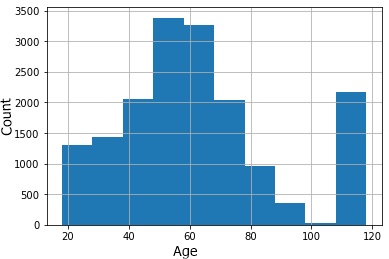After having a quick look over the plot we have an idea about data graphically. Most of the variables are in discrete form(those who are having spikes at some points), while three variables have proper distribution. Here i cant say that any distribution is left skewed or right skewed at this point as it is very abstract to say that, let's discuss as we go further.
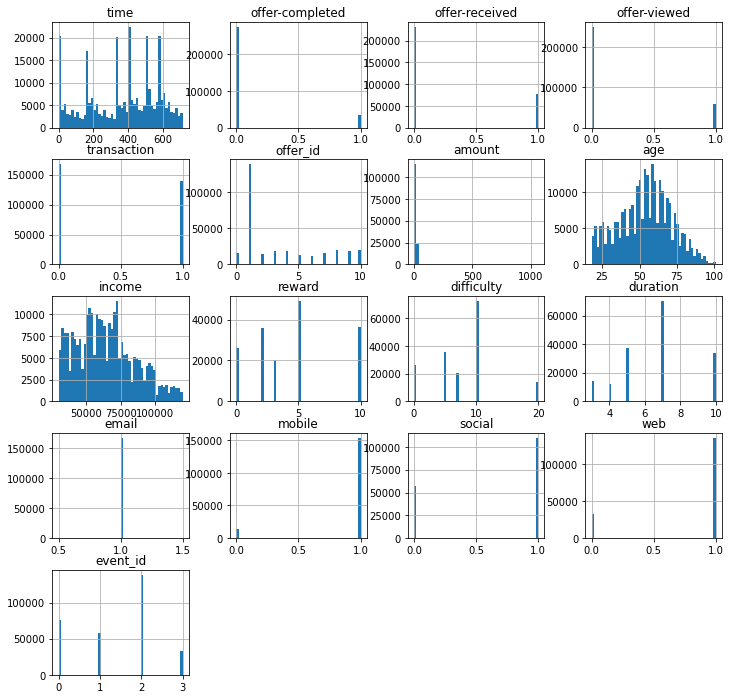Below is the correlation heatmap among variables, we can see covariances corresponding to event_id, offer_completed, offer_viewed, offer_received is very high, so these variables might be important while predection, we can get general idea about how intensely one covariate depends on other.
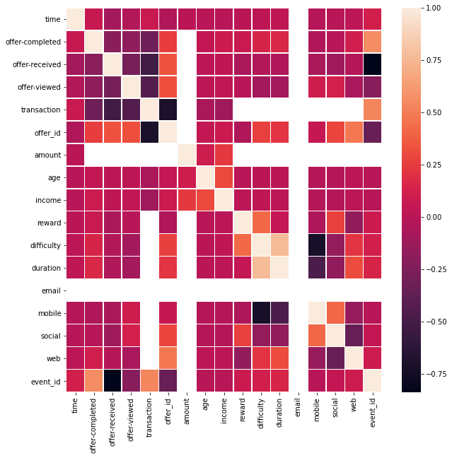Below bar-plot showing gender distribution. gender might be factor for giving adds and offers. We can see that ratio between male and female is approximately 3:2
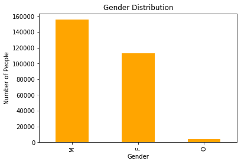It can be clearly seen in offer_received plot that dicount offer is most popular, bogo offer is very close to it. Informational is least popular by starbucks
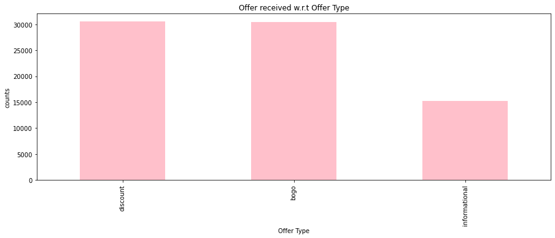It can be clearly seen that when offer viewed is to be concerned then bogo offer is most popular, discount offer is second. Informational is least popular by starbucks
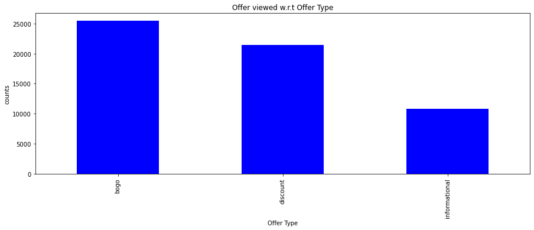It can be clearly seen that when offer completed is to be concerned then discount offer is most popular, bogo offer is very close. Informational gets zero marks here.
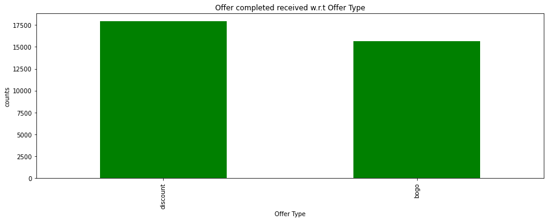We can see easily that every offer has equal chances of recieving, as the graph is completely uniform(discretely)
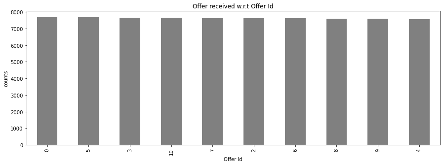Below is the plot of offer viewed, we can clearly see that it is not uniform(kind of midely right skewed), so different offer_id have different probability of being viewed, this kinda makes sense because this might depends on user interest, interesting offers attracts more customers(and users view only those).
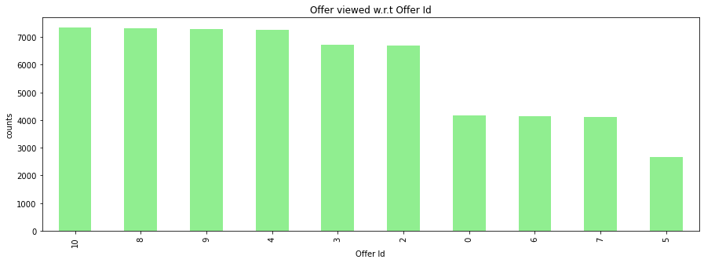Below is the plot of offer completed, we can clearly see that it is not uniform(overall decreasing height) just as previous one, so different offer_id have different probability of being completely, this kinda makes sense as this is somehow related to offer_viewed and i was expected similar behaviour, because this might depends on user interest, interesting offers attracts more customers(and users view and buy only those).
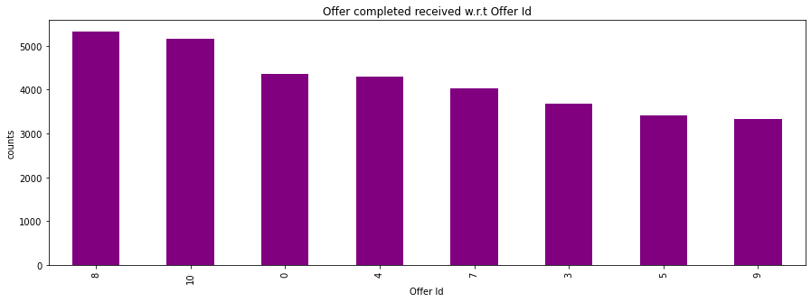Bogo offers as we have already seen, has great response among users, so below plot kind of confirms that, further the graph is little bit right skewed, aroung 4500-4800 users are interested in this at some point.
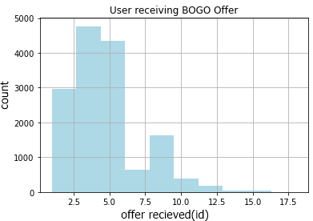Discount offers as we have already seen, has great response among users, so this plot kind of confirms that, further the graph is little bit right skewed, remeber that area is less than bogo offers which is completely inclined with our previous analysis results, further around 4500-4800 users are interested in this at some point.
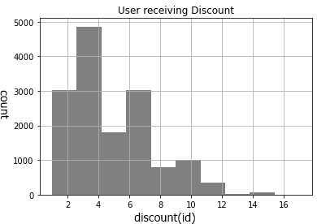Going through all the above plots and discussions let's bring them together:
So different offer were given to different section of people depending upon locations, gender etc, and change in market hugely depend upon it. Offer recieved for some region might be different from others similarly offer viewed depends upon this and various other factors. The outcome of these is certainly transaction done/completed or cancelled.
In this section i will be sharing about the ML models which i tried, before that let's first see preprocessing of features.
This is how i dealt with infinte values:
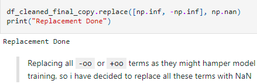
Results after dealing:
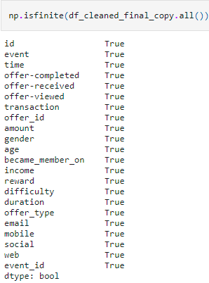
This is how i splitted the dataset:
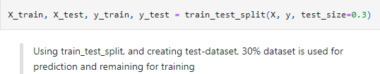
Below are the ML models which i tried:
I used exhaustive gid search over above models(random trees), also particularly in case of random forest and decision tree i trained model on subset and try looping over random_state variable and got the below statistics for best prediction:
max_depth: 8, max_features: 'auto', min_samples_leaf: 2, min_samples_split: 2, n_estimators: 2, random_state: 42
So in this section we trained four different models and we can say overall that these models had incresing complexity, but it turns out that simplest model outperforms all others in terms of accuracy.
Further this might happens because our data-set after cleaning became close to ideal, that's why data-preprocessing is crucial step. Also if we will use more complex model then we might also fullfill the requirement of data, to train those parameters. Further regularization also plays major role in accuracy, here since the dataset and covariates were simple and complementing each other so excessive use of regularizer might produce negative effect: e.g., model 2 has lower accuracy than model1 since we added dropouts, similarly model 3 has lower accuracy than model 4 as random forests are ensemble of decision tree with inherent regularization effect inside them.
| Model | Training Accuracy | Test Accuracy |
|---|---|---|
| Single layer NN | 0.6667 | 0.6473 |
| Four layer NN | 0.4864 | 0.4902 |
| Random Forest | 0.792 | 0.78 |
| Decision Tree | 0.8202 | 0.81 |
I firstly like to thanks udacity team for this awesome project, also i would like to thanks the grader who will be grading this project. I found some part of project challenging specially data cleaning part and model training part. The transcript dataset was really challenging and my most of the time consumes in cleaning that bit, but overall the experience was really nice.
The quandary that I opted to solve was to build a model that checks whether a customer will respond to an offer. My strategy for solving this problem has overall four steps(talking abstarct). Firstly, I coalesced offer portfolio, customer profile, and transaction data. Secondly, I had done feature selection and data cleaning related to that(feature selection), i have used correlation matrix too. Thirdly, I assessed the precision and F1-score of a problem model that postulates all offers. Finally, I compared the performance of neural nets, random forest, and decision models. This analysis suggests that an decision tree model has the best training data precision and F1-score(around 0.81). I also refined random forest model hyperparameters utilizing a grid search but still decision tree was overall best for my analysis.
1. How an offer works in starbucks in general? What are the top offers provided by them?
The ads/offers are sent through different forms(multiple channels), one can easily see from the plots and data analysis above that different populations have different ads/offers(at least differing by gender, age, income and/or since they are customers). Also top offers are completely subjective to particular population, let's again see the scenario since most people are within age group of [40-70], so we cannot sell only fast food to them, we need to be more careful about rolling out combo packages. One idea is we can include soup, vegetable salad etc like stuffs with traditional starbucks food to attract them. So for them top offers will be this combo. Gender might be factor for giving adds and offers. We can see that ratio between male and female is approximately 3:2, e.g. let's say female like deserts so this might be top feature for them.
2. What is change in market of starbucks when some offer is there?
Market is highely depends uponn offers as we have already seen this in Exploratory data analysis, we have seen that different offer_id have different probability of being viewed, this kinda makes sense because this might depends on user interest, interesting offers attracts more customers(and users view only those).
3. How user action parameters(say viewed, offer recieved, transaction done, cancelled, completed) are related to demographic attributes or other attributes that company floats?
I was thinking that there will be no relation between these, i.e., customers will not be influenced by these attributes but after analysing the plots and model i realized that there was some gap in my thought, different offer were given to different section of people depending upon locations, gender etc, and change in market hugely depend upon it. Offer recieved for some region might be different from others similarly offer viewed depends upon this and various other factors. The outcome of these is certainly transaction done/completed or cancelled.
1. One can think of using multiple features or higher order features for better prediction accuracy.
2. Data cleaning could be performed more aggresively, e.g., handling missing value can be done using some heuristics made after doing deep analysis of dataset.
3. I didn't used all the features because i didn't find any use of them, maybe these features could give hidden insights, e.g., I could not think of additional features using the time data.
4. Choice of model, one might think more complex Neural nets with suitable dropouts, Boosted Trees, Naive Bayes model or may try SVM. Hyperparameters and number of epochs specially in neural networks could be increased.